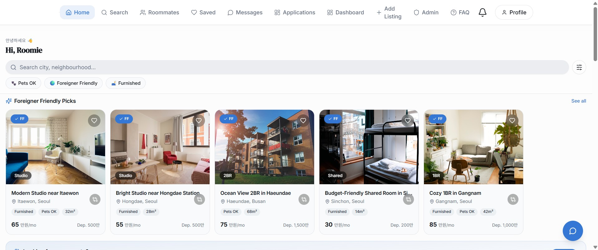
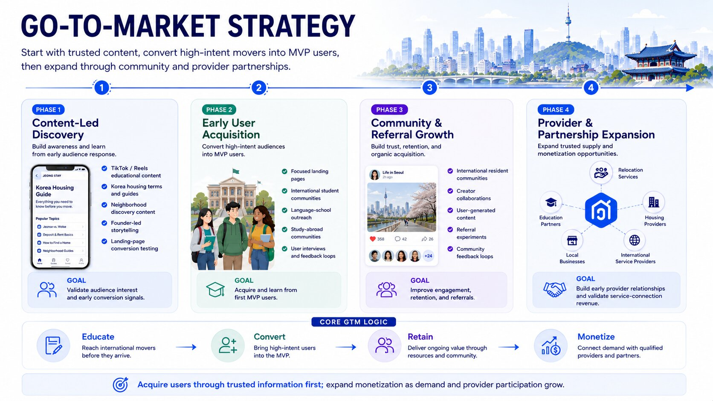

BRAND STRATEGY · STARTUP · GROWTH · PRODUCT MARKETING
Jeong Stay
Building a relocation brand for people making Korea home.
An early-stage startup project combining customer research, brand development, content strategy, product thinking, market validation, and digital growth for foreigners relocating to South Korea.



OVERVIEW
Turning a relocation problem into a brand.
Jeong Stay began with a simple problem: relocating to South Korea can be difficult when housing, language, local knowledge, and trusted resources are fragmented.
I began developing Jeong Stay as a platform designed to help international students, digital nomads, creators, and young professionals better understand where to live, how to navigate relocation, and how to build a sense of home in Korea.
As founder, I have been responsible for the brand, positioning, audience research, product direction, content, early growth, partner strategy, and investor-facing communications.
MY ROLE
Brand
Naming, positioning, visual direction, messaging, brand identity, and customer-facing communications.
Marketing
Social strategy, content development, audience growth, community building, and launch planning.
Product
MVP definition, customer journeys, feature prioritization, onboarding concepts, and platform strategy.
Business
Market research, monetization strategy, partnerships, pitch development, and early-stage fundraising.
01 · THE PROBLEM
Relocation information exists. Trust and simplicity don't.
Foreigners moving to South Korea often encounter fragmented information, language barriers, unfamiliar housing systems, difficulty evaluating providers, and limited guidance about neighborhoods and everyday relocation logistics.
Housing
Understanding deposits, contracts, neighborhoods, listings, and local rental expectations.
Language
Important relocation information and service interactions may not be easily accessible in English.
Trust
Finding reliable listings, providers, and advice can be difficult from abroad.
Fragmentation
Housing, relocation information, neighborhood research, and community resources often live in separate places.
02 · AUDIENCE STRATEGY
Designing for different reasons to relocate.
International Students
Navigating housing, universities, neighborhoods, budgeting, and first-time relocation.
Digital Nomads
Looking for flexible living options, connectivity, community, and location guidance.
Creators
Seeking neighborhoods, services, communities, and resources that support creative work.
Young Professionals
Balancing work, housing, commuting, lifestyle, budgeting, and longer-term relocation needs.
03 · BRAND DEVELOPMENT
Building around the feeling of home.
The Name
The brand evolved into Jeong Stay, inspired by the Korean concept of jeong — the emotional connection, warmth, and attachment that can develop between people and places.
The Positioning
Rather than positioning the company as another property listing site, the brand centers on helping people feel informed, supported, and connected as they build a life in Korea.
A relocation brand built around trust, belonging, guidance, and connection.
04 · GO-TO-MARKET STRATEGY
Building demand before scaling acquisition.
The Approach
Because Jeong Stay is being built pre-launch, I developed a phased go-to-market strategy designed to validate demand, establish trust, and grow an audience before investing heavily in paid acquisition.
The strategy begins by answering the real housing and relocation questions international movers are already asking, using useful content as the first point of discovery.
The Growth Path
As awareness grows, the strategy moves users from educational discovery into early platform adoption, community participation, referrals, and eventually trusted provider partnerships.
This creates a progression from audience education to conversion, retention, and monetization rather than treating acquisition as a one-time transaction.
Discover
Attract audiences through useful housing, neighborhood, and relocation content.
Acquire
Convert high-intent audiences into early users and waitlist members.
Retain
Build trust through community, useful resources, recommendations, and continued engagement.
Expand
Connect audience demand with trusted housing and relocation service providers.
05 · EARLY VALIDATION
Building the audience before the product.
The Hypothesis
If relocation challenges were meaningful enough to support a dedicated platform, educational and relocation-focused content should attract organic interest before a full product launch.
The Test
I used short-form social content to test topics, messaging, audience interest, and relocation pain points while simultaneously developing the product concept.
Generated across the first 16 posts during early pre-launch audience validation.
06 · PRODUCT STRATEGY
Start with guidance. Build toward transactions.
Housing Education
Help users understand Korea's housing system before beginning their search.
Neighborhood Guidance
Help users evaluate areas based on lifestyle, transportation, budget, and relocation goals.
Relocation Resources
Centralize practical information needed before and after arrival.
Community
Create ways for movers to ask questions, share experiences, and connect.
Verified Providers
Build toward trusted housing and relocation service partnerships.
Future Intelligence
Explore AI-assisted translation and relocation tools to reduce friction across the journey.
WHAT THIS PROJECT DEMONSTRATES
Marketing before there is a playbook.
0 → 1 Thinking
Moving from an observed customer problem to a differentiated brand and product concept.
Audience Validation
Testing assumptions through organic content and audience response rather than waiting for launch.
Cross-Disciplinary Strategy
Connecting brand, growth, product, customer experience, partnerships, and business strategy.